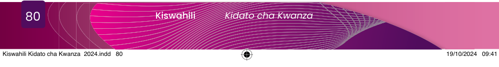

Bibliografia
- Baraza la Kiswahili la Taifa. (2016). Kamusi Kuu ya Kiswahili. Longhorn Publishers (T) Ltd.
- Buliba, A., Njogu, K. & Mwihaki, A. (2006). Isimujamii kwa Wanafunzi wa Kiswahili. The Jomo Kenyatta Foundation.: Prints Arts Ltd.
- Kihore, Y. M., Massamba, D. P. B., & Msanjila, Y. P. (2003). Sarufi Maumbo ya Kiswahili Sanifu (SAMAKISA): Sekondari na Vyuo. TUKI.
- Massamba, D. P. B., Kihore, Y. M., & Hokororo, J. I. (1999). Sarufi Miundo ya Kiswahili Sanifu (SAMIKISA): Sekondari na Vyuo. TUKI.
- Massamba, D. P. B., Kihore, Y. M., & Msanjila, Y. P. (2004). Fonolojia ya Kiswahili Sanifu (FOKISA): Sekondari na Vyuo: TUKI.
- Massamba, D.P.B. (2009). Stadi za Lugha ya Kiswahili: Ufahamu na Ufupisho II. TUKI.
- Mbijima, R. J. (2020). Uduni wangu: Ngonjera za Watoto. Seromercy Publishing Company Limited.
- Mdee, J.S. (2010). Nadharia na Historia ya Leksikografia. TUKI.
- Mekacha, R.D.K. (2011). Isimujamii: Nadharia na Muktadha wa Kiswahili. TATAKI.
- Msanjila, Y.P., Kihore, Y.M. & Massamba, D.P.B. (2009). Isimu Jamii: Sekondari na Vyuo. TUKI.
- Mvungi, M. V, na Omari, C.K. (1981) Urithi wa Utamaduni Wetu. Tanzania Publishing House.
- Mwendamseke, F. J. (2017). Uamilifu wa Mkazo katika Kiswahili Sanifu. Mulika, Juz. 35:1 - 42.
- Taasisi ya Elimu Tanzania. (1996). Kiswahili Kidato cha Kwanza. Oxford University Press.
- Taasisi ya Elimu Tanzania. (1996). Kiswahili Kidato cha Pili. Oxford University Press.
- Taasisi ya Elimu Tanzania. (2019). Kiswahili Shule za Sekondari Kitabu cha Mwanafunzi Kidato cha Tano na Sita, Lugha na Sarufi. Taasisi ya Elimu Tanzania.
- Taasisi ya Elimu Tanzania. (2021). Kiswahili Shule za Sekondari Kitabu cha Mwanafunzi Kidato cha Kwanza. Taasisi ya Elimu Tanzania.
- Taasisi ya Elimu Tanzania. (2021). Kiswahili Shule za Sekondari Kitabu cha Mwanafunzi Kidato cha Pili. Taasisi ya Elimu Tanzania.
- TUKI. (2019). Kamusi ya Kiswahili Sanifu. University of Dar es Salaam and Oxford University Press.
- Waihiga, G. (2010). Sarufi Fafanuzi ya Kiswahili. Longhorn Publishers (T) Ltd.
